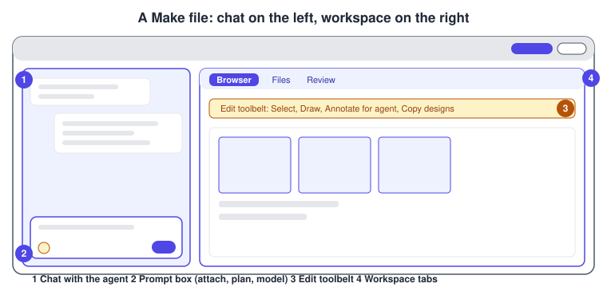
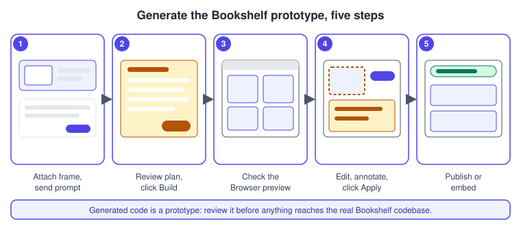
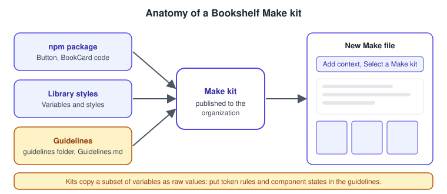
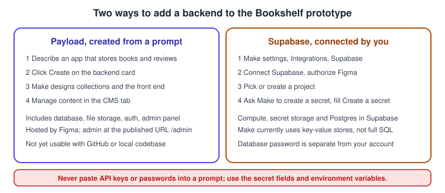
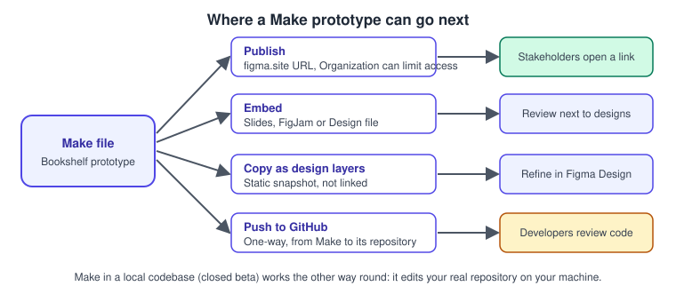

Figma Make
|
This content was generated with the assistance of AI and should be verified against the official documentation before being relied on in production. |
This page was written on 2026-10-30 against the UI3 interface and the Figma Make articles in the Figma Learn help centre. Figma Make is its own product in the Figma family: a prompt-driven builder that turns a description, and optionally Figma frames, into a running prototype or small web app with real code behind it. Make left beta on 2025-07-24, when Figma announced that all its AI features and products were moving out of beta. Some parts remain labelled differently: the help centre FAQ still calls publishing a beta feature, Make in a local codebase is a closed beta limited to a number of users, and the Make kit and backend articles do not state a beta or GA status, so treat any status as subject to change.
On seats and plans, the help articles say Make is included with Full seats on paid plans, and that Dev, Collab and View seats can use it only in drafts, where they can try it but cannot share the file or publish. Starter (free) plans can use Make, with lower AI credit allowances, but not team libraries for style context. K-12 Education users do not have access. Organization and Enterprise plans need AI features enabled by an administrator. The seat and plan model and AI credits are explained on Plans, Seats and AI Credits; this page names plan tiers only and never prices.
The running example is Bookshelf. The team has a book catalogue screen designed in Figma and wants a clickable prototype that stakeholders can open in a browser, with a list of books and a review form, before engineers commit to a build. This page covers Make itself. For the broader landscape of app builders such as v0, Lovable and Bolt, and the decision between a throw-away prototype and production code, read Prototyping with AI. Figma’s conversational design assistant is on The Figma Agent and Skills, and Figma’s other generative tools are on Figma AI Tools.
What Make is and how a Make file is laid out
A Make file is a Figma file type, created and stored like any other. In UI3 you create one from the file browser: open your Drafts and click Make in the upper-right corner. You can also start from a cloned GitHub repository or from a Make template. The editor has two areas.
-
The chat is where you talk to the agent. You can queue more prompts while it works, and reorder, edit or delete queued messages. Several chats can run at once in one file.
-
The workspace has three kinds of tab: Browser, a live preview you can interact with and edit; Files, where you read and edit the generated code; and Review, which shows code changes as additions and deletions.
Teammates can join the same conversations, comment, and edit the code at the same time. Make works with code rather than design layers. When you want design layers back, you copy the preview into a Figma Design file (see Copy the preview as design layers).

Source: Figma Learn: Explore Figma Make
The prototype Make builds is ordinary web code that runs in the preview. It is a starting point for discussion and testing, not a substitute for the engineered Bookshelf codebase. The page Dev Mode and Figma MCP Server cover the route from designs to production code.
The Make workflow at a glance
The loop is the same for every project: give the agent context, decide whether to plan first, build, inspect the preview, refine, and then send the result somewhere useful.
From prompt to prototype: attachments and context
Before sending a prompt you can add context from the plus menu (Add context) in the prompt box: attach one or more Figma designs by pasting a design URL, paste frames, components and images directly into the chat, drag in text files, bring style context from a Figma Design library (paid plans only), choose a Make kit, add a backend, connect an MCP connector to an external tool, or let the app search the web or fetch a given URL. The help article gives practical guidance for attachments:
-
Attach Figma frames rather than screenshots. Frames carry structured data, while an image cannot reliably convey exact values such as colours.
-
Use auto layout in the source design where possible; see Auto Layout.
-
For complex designs, attach frame by frame, and build screen by screen with one or two designs at a time.
-
Say whether you want an exact one-to-one build or only a style reference.
-
Do not put API keys or personal data in the chat. Ask Make to build a secure input, or add a backend.
Make may include third-party content such as fonts, code packages or images, and you are responsible for having the rights to it before you publish.
Procedure: generate the Bookshelf prototype
-
In the file browser, open Drafts (or a team folder if you have a Full seat) and click Make in the upper-right corner.
-
In the chat, paste the URL of the Bookshelf catalogue frame, or paste the frame itself. Attach the review form frame too, but keep to one or two designs at a time.
-
Type a prompt such as: build a clickable Bookshelf catalogue that matches the attached frame exactly; clicking a book opens a detail view with a Write a review form; keep all data in memory for now.
-
Click Send. Make generates the code, which can take a few minutes for complex builds, and may show a to-do list in the chat. Queue a follow-up prompt if you need to.
-
When Make finishes, read its summary and click through the interactive preview in the Browser tab.

Plan mode and the model picker
Plan mode (paid plans) makes Make write a structured plan before any code. Turn it on with Add context then Plan, or type /plan in the chat; switch back with the mode dropdown in the prompt box and choose Build. Make first reads your attachments and prompt, then streams a plan into the chat and creates a plan.md file that opens automatically. You can edit plan.md directly or ask for revisions in the chat, with no limit on rounds, and click Build to execute it. The article recommends plan mode for complex work on the first turn, such as multi-section layouts or a close translation of a design, notes that it works with the default model and a Claude Opus model but not with the Gemini models, and says it usually gives better results on large tasks but uses more AI credits than Build.
The model picker is the model name shown in the prompt box. Click it to see the list and choose a model for that prompt. New files start with the default model, which can change over time; existing files keep the last model you chose; you can switch at any time. On 2026-10-30 the list offered, besides the default, models from Anthropic, OpenAI and Google, with two Gemini models in limited-time promotions that use fewer credits until their stated end dates. The picker is documented for Starter, Professional, Education (not K-12), Organization and Enterprise plans with AI features enabled, and it is not available in Figma for Government. Figma says credit use varies by model, task and context size, that non-default models may behave differently, and that your own credit history is the best guide.
Procedure: plan the review form with plan mode
-
In the prompt box click Add context, then Plan (or type
/plan). -
Describe the review form: star rating, text field, validation, and an Add to shelf confirmation. Attach the review form frame.
-
Send, wait for
plan.mdto open, and edit it: remove sections you do not need and add the empty and error states. -
Click Build in the chat and wait for the preview to update.
-
Open the model name in the prompt box and, for minor styling tweaks later, pick a model suited to quick changes, as the credit article suggests.
Make kits: design-system-aware generation
A Make kit is a shared starting point that bundles code context, style context and guidelines, so a teammate’s very first prompt already follows the design system. A kit can include npm packages (for example a React component library), variables and styles from published Figma Design libraries, and guidelines that explain how Make should use these assets. See Design Systems, Libraries and Publishing and Variables, Collections and Modes for the library side.

Kits are available to Full seats on paid plans, and organization admins can approve published kits and enable them by default. The article lists these limits: kits do not fully extract design tokens, because a subset of variables becomes a single global CSS file with raw values and variable syntax is lost; the extracted CSS is simplified, so the guidelines should state token rules, especially for states; changes to a kit affect only the kit, not the Figma Design library; and a kit cannot be published from drafts. The credit article adds that Make reads the guidelines file on every prompt, so keep it short, link to smaller task-specific files, and remove anything already covered by the package or library.
Procedure: create and use the Bookshelf kit
-
Open a new Make file, click Settings in the top-right corner and choose Create a kit.
-
Choose Assemble your kit to reuse an existing package and library styles (or Start from scratch to have Make build components).
-
Add the Bookshelf Design System library styles and, if you have one, the npm package that holds the React
Buttonand book card. Large packages can take a few minutes to import. -
Open the
guidelinesfolder and fill inGuidelines.md, using the skeleton below. -
Test the kit by prompting a catalogue screen and checking it for deviations from the design system; refine the guidelines and repeat.
-
Move the file from drafts into an organization folder, click Publish kit, give it a name and thumbnail, configure the package settings (
package.jsonandvite.config.tsdefaults or custom) and click Publish. -
In any new Make file, click Add context, then Select a Make kit, and choose the Bookshelf kit.
An illustrative Guidelines.md for the Bookshelf kit. The headings and rules are examples to adapt, not a required format:
# Bookshelf guidelines
## Components
- Use the Button from the package for every action; never hand-roll buttons.
- Book cards show cover, title, author and a rating; the review action is a ghost Button.
## Tokens
- Use the colour and spacing tokens from the global CSS; never hard-code hex values.
- Hover, pressed and disabled states use the token set named in the Button description.
## Layout
- Catalogue grid: one column on mobile, two on tablet, four on desktop.Editing a generated prototype
Editing needs edit access to the file and is documented for new Make files; older files keep the previous interface. In the Browser tab, click Edit to open the toolbelt.
-
Select: click one or several elements in the preview and change properties such as colour, padding and text styling in a properties panel. The changes appear above the prompt box and are only saved when you click Apply, which uses AI credits.
-
Draw: mark up the preview, click Add note, write the instruction and click Add annotation, then Apply.
-
Annotate for agent: click where a change belongs, write the instruction, optionally attach an image, click Add annotation, repeat as needed and click Apply. These annotations are unrelated to Dev Mode annotations.
-
Copy designs: copy the preview as design layers (see below).
-
Version history: a new version is created whenever you or Figma AI edits the file; open Version history at the top of the chat panel to preview, favourite, name or restore a version. Restoring does not delete later versions.
-
Code: edit the generated files directly in the Files tab. Search in the Files tab with Control F or Command F.
Small visual changes are cheaper through point-and-edit or direct code edits than through a new prompt, according to Figma’s credit guidance.
Procedure: polish the Bookshelf catalogue
-
Open the Browser tab and click Edit, then Select.
-
Click the first book card, then raise the corner radius and increase the padding to match the design.
-
Choose Annotate for agent, click the Add to shelf button, type "Show a confirmation after adding" and click Add annotation.
-
Click Apply in the chat and wait for the preview to refresh.
-
If the change is wrong, open Version history and restore the previous version.
Adding a backend
The help article says you need a backend to keep app state across browsers, provide logins, save and load content, and store secrets. It is available on Starter, Professional, Education, Organization and Enterprise plans, to Full seats, and other seats and plans can try it. Two options are documented.

-
Payload: Make creates it from a chat prompt, with a database, file storage, authentication and an admin panel. Figma hosts the app and its data. Payload backends are currently hosted in the eastern United States, so distant users may see longer request times, and GitHub integration and local codebase workflows are not yet available for Payload-backed apps. Figma’s 2026-10-15 release notes describe Make scaffolding a Payload backend natively across all plans.
-
Supabase: you connect an existing or new Supabase project. It provides compute, secret storage and a Postgres database, though Make currently uses key-value stores rather than a full SQL setup. Authorization applies to your Figma Organization or Professional team.
API keys belong in the environment variable settings in Make, which Figma stores securely, and are not visible to visitors of a published app. Never paste keys into prompts. For Supabase, ask Make to create a secret and type the value in the Create a secret box.
Procedure: store Bookshelf reviews with a Payload backend
-
Open the Bookshelf Make file and ask: add a Payload backend so reviews are stored and I can moderate them in a CMS.
-
Click Create on the backend creation card.
-
Wait while Make designs the data model, creates the collections and wires the front end.
-
Open the CMS tab, add a test review and check that it appears in the preview.
-
After publishing, open the published URL with
/adminappended to reach the admin panel.
Procedure: connect Supabase instead
-
Go to Make settings, then Integrations, then Supabase, and click Connect Supabase.
-
Sign in or create an account and organization, select the organization and click Authorize Figma.
-
Connect an existing project, or click Create new project and enter a name, region and database password, then click Create project.
-
If the prototype needs a third-party key, ask Make to create a secret named for it and enter the value only in the Create a secret box, then click Create secret.
Publishing, embedding and handing off

Publish
Publishing gives the prototype a random public URL ending in figma.site; anyone with the link can view it, and viewers cannot see the chat or the Make file. Sharing the Make file itself gives collaborators the conversation and content under normal Figma permissions. On Organization and Enterprise plans you can restrict a published app to logged-in organization members, without password protection. You can assign a custom domain you own; the number allowed depends on the plan and is shared with Figma Sites (see Figma Sites). Edits reach the public only after you click Update. Unpublish removes the app and a later republish reuses the same URL. If the Publish modal warns about missing web fonts, upload WOFF or WOFF2 files first. Published apps are not indexed by search engines by default.
-
Open the Bookshelf Make file and click Publish in the upper-right corner.
-
Set a title in the Publish modal, optionally open Make settings and General to adjust site settings, then click Publish.
-
Send the figma.site URL to stakeholders. After later edits, click Update to refresh it.
Embed in Slides, FigJam or Design
-
In the Make file click Share in the top-right corner, then Copy link, then Copy link as Make file.
-
Paste the URL into a Figma Design file, a FigJam board or a Figma Slides deck (you need edit access there and view access to the Make file).
-
Click play to try the prototype inline, stop to reset it, and drag the edges to resize the container; the prototype adapts like a browser window.
The embed is covered further on Embeds, and the slide side on Figma Slides. Other people in the file see only the thumbnail while you play it.
Copy the preview as design layers
This needs a Professional, Education (not K-12), Organization, Government or Enterprise plan and edit access to the destination file.
-
In the preview, navigate to the state to copy, for example the book detail screen.
-
In the Browser tab click Edit, choose Copy designs, then click Whole page.
-
Open or create a Figma Design file, optionally add a library with variables, and paste.
The pasted layers are a static snapshot, not linked to the Make file, not interactive and not automatically tied to your design system; variables available in the file are matched and bound. Editing them does not change the prototype.
Push to GitHub
Push is available on Starter, Professional, Education (not K-12), Organization and Enterprise plans. A one-time connection per team or organization is made in Make settings under GitHub with Connect GitHub; only one GitHub account or organization can be connected per Figma team or organization.
-
Open Make settings, then GitHub, and choose Create Repository.
-
Enter a repository name and click Create.
-
For later pushes, choose Make settings, GitHub, then Push to the repository; View opens it.
The limits are significant: Make pushes only to repositories it creates, one per Make file; sync is one way, so edits made on GitHub are overwritten by the next push; pushes go to the default branch and branch management is not supported; GitHub Enterprise Server and IP allow lists are unsupported. A separate article covers Git with Make and code layers, which is open beta.
Make in a local codebase (closed beta)
Make in your local codebase is a different mode: instead of generating a fresh app, it edits an existing repository on your machine with the running app and real data. The help article calls it a closed beta for a limited number of users, so it is documented here only to explain where it fits. It requires the Figma Beta desktop app for Mac, admission to the closed beta, AI features enabled for the organization, and a Git-hosted codebase. GitHub is fully supported, including pull requests; GitLab and Bitbucket partly, over SSH, without pull request creation; GitHub Enterprise Server is not supported. Each prompt that changes code becomes a local commit, and you can create and switch branches from Make. An engineer adds a .figma/make folder to the repository root with setup, install, dev, verify and env files, committed to the main branch; the scripts must exit with 0 on success and be idempotent, and env must define PORT and FIGMA_MAKE_URL. The article gives no example contents, so check it for the exact format.
# layout of the configuration folder at the repository root
.figma/make/
setup # system dependencies, first time Make sees the repo
install # project dependencies, start of every session
dev # starts the dev server, after install
verify # polls a health endpoint until the server responds
env # PORT and FIGMA_MAKE_URL (required), BOOTSTRAP_TIMEOUT (optional)The troubleshooting article advises waiting 30 to 60 seconds after setup before the first prompt, closing other dev servers on port 3000, and making setup scripts non-interactive.
For turning a frame into code with your own agent instead of Make, see Figma MCP Server; for repositories connected to design layers see Code Layers.
Seats, plans and AI credits
Each prompt that Make runs consumes AI credits, and Apply for edits and annotations does too. Consumption depends on the model, the complexity of the task and the amount of context processed; fix-up prompts cost credits, and a long prompt history makes each new prompt costlier. To see usage, remaining credits and the reset time, open the Main menu in a file where you have edit access and choose AI balance. Starter plan credit limits are lower and enforced daily and monthly; paid plans have larger allowances tied to the seat (see Plans, Seats and AI Credits).
The credit-saving practices in the official article: build on a Make kit and a concise guidelines file; write a clear first prompt that defines scope and the desired end state; use plan mode for complex work; use point-and-edit or direct code edits for small changes; match the model to the task; scope attachments (frames for fidelity, screenshots when pixel accuracy is not needed); duplicate a file for a clean history at no extra credit cost; and clear the chat context or turn the project into a template when the scope shifts.
Pitfalls
-
Treat the generated app as a prototype. It has not been through your engineering, security or accessibility review.
-
Attach frames, not screenshots, and keep to one or two designs per prompt.
-
Prompts are cumulative: a long thread costs more and may drift; start from a duplicate when the direction changes.
-
A published URL is public to anyone holding it unless your Organization or Enterprise plan restricts it to members.
-
The GitHub push overwrites repository changes; do not edit that repository by hand.
-
Dev, Collab and View seats keep Make files in drafts and cannot share or publish them.
-
Do not paste API keys or personal data into the chat.
Where older guides are outdated
-
One 2025 guide calls Figma Make "in beta"; Make has been generally available since 2025-07-24, though publishing and other parts carry their own status.
-
Books that describe paid seats and viewer seats predate the Full, Dev, Collab and View seats of 2025-03-11, and Make is tied to the seat as described above.
-
The books do not cover AI credits; see Plans, Seats and AI Credits.
-
Books that show the old interface (UI2) describe panels that no longer exist; UI3 has been mandatory since 2025-04-30.
References
-
Figma Learn: Add a backend to a functional prototype or web app
-
Figma Learn: Publish, update, or unpublish a Figma Make file
-
Figma Learn: Embed a Make prototype in a slide deck, board, or design file
-
Figma Learn: Make in your local codebase: Setup, gotchas, and troubleshooting
-
Figma Learn: Best practices for optimizing AI credits in Figma Make